- 打开视野，发现兴趣：在北京理工大学重庆创新中心开展光谱、无人机与疯狂科学秀课程，了解科学与技术，也留意什么最能激发自己的好奇。
营期日期11月26日—28日2026年 · 三天两晚
适合年龄9—15岁青少年独立参营
集合出发重庆 · 永川11月26日 08:00
单人报名1698 元/人团报1498元/人
Why This Camp
三天，让探索成为成长的起点
- 合作行动，迎接挑战：在两种不同的城市任务中共同辨图、寻找线索、作出判断；遇到卡点时，学习求助、调整与再次尝试。
- 复盘经历，认识自己：第一晚探索兴趣与未来方向，第二晚通过团体心理辅导回看协作与挑战，让发现不止于眼前，也成为继续成长的起点。
DAY 01
第一天｜未来引擎：北理工探索之旅
08:00 永川集合，10:00 抵达北京理工大学重庆创新中心。
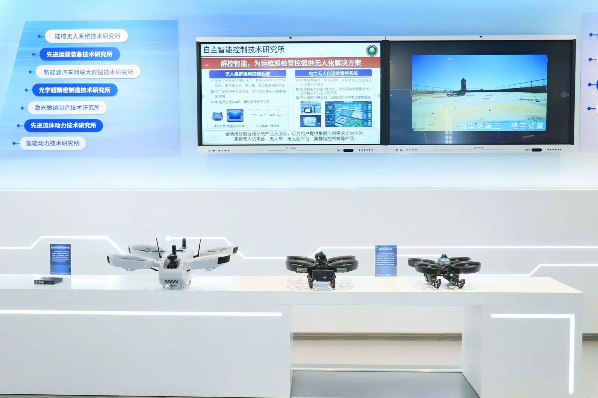
光谱探索家｜解码光的秘密（10:00—12:00）一束普通的光，拆开来看是什么？孩子动手操作、观察现象、记录发现，把"为什么会这样"问出口。
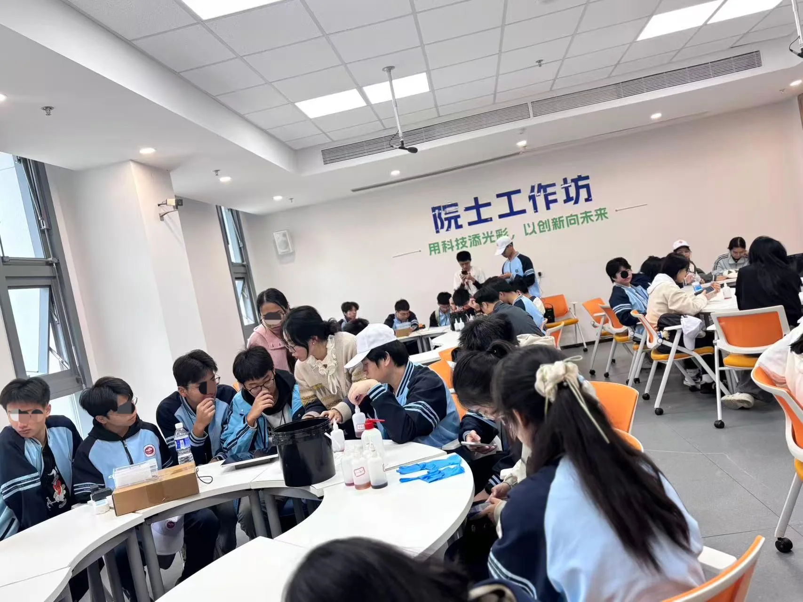
午餐与休整（12:00—13:00）
未来飞行家｜揭秘无人机的飞行密码（13:00—15:00）它靠什么稳稳停在空中？靠什么判断方向和距离？在导师带领和安全边界内，孩子认识设备、理解飞行原理，完成课程里的基础环节。
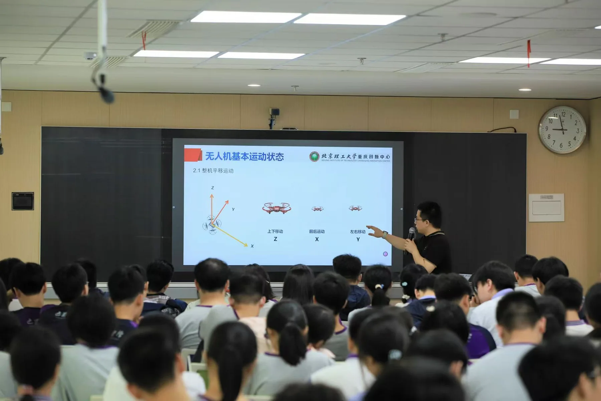
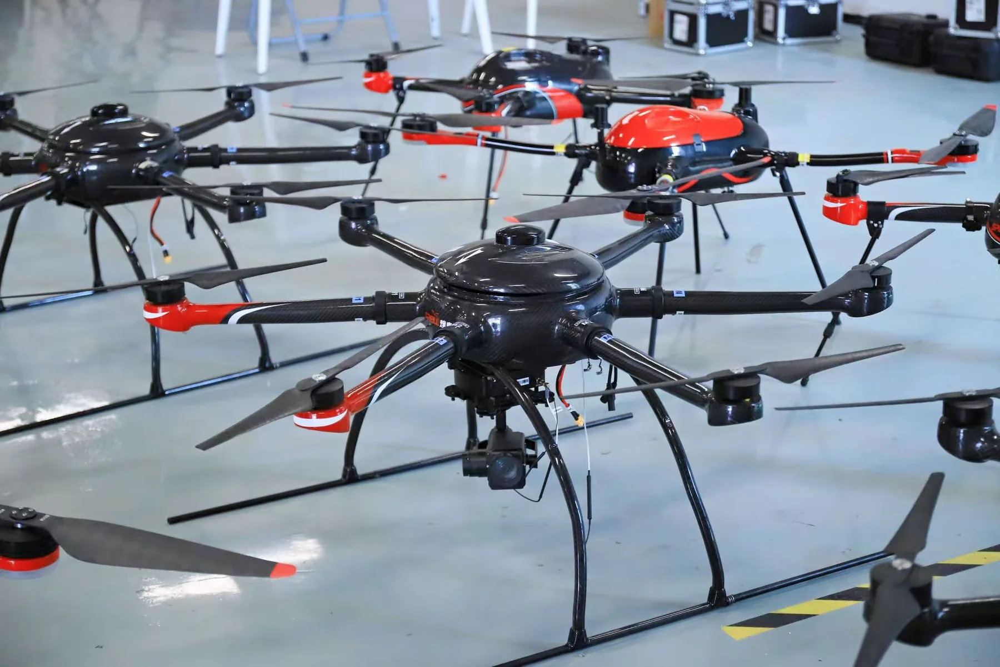

疯狂科学秀｜解锁科学的奇妙瞬间（15:00—17:00）让看似不可思议的现象，成为追问科学的起点。通过科学演示与现象观察，孩子带着惊喜寻找背后的原理，把“真神奇”变成“为什么”。
- 空气与旋翼：从空气动力炮、直升机飞行到车轮陀螺等演示，观察空气、旋转与平衡之间的关系。
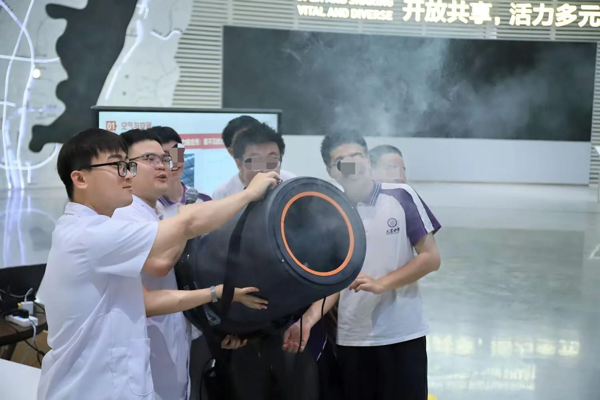
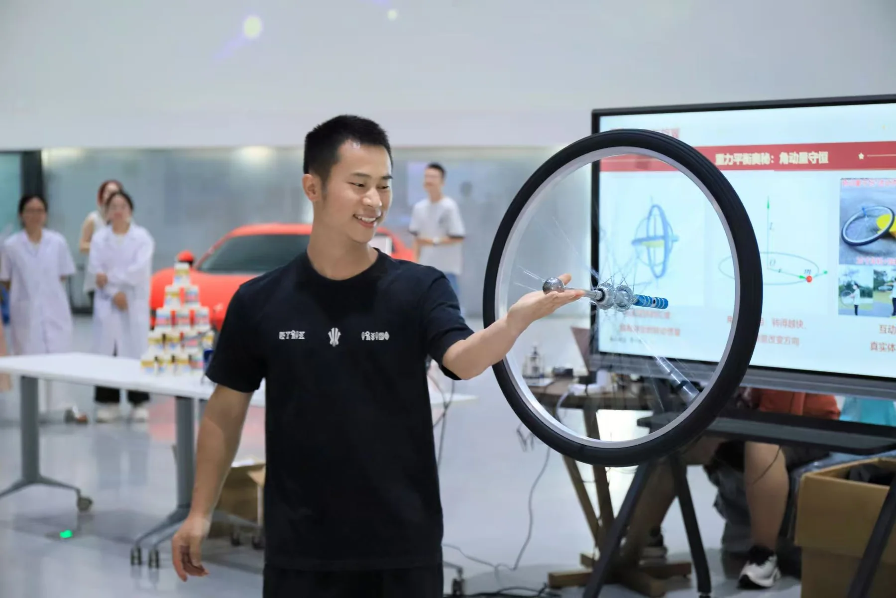
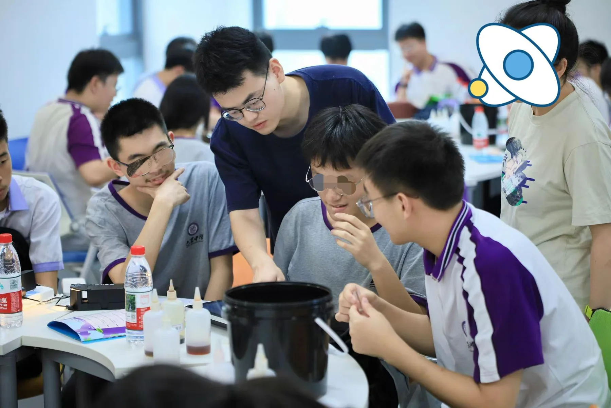
- 生命科学材料秀：观察纳米微囊与丁达尔效应、从液体到凝胶的变化，发现微观结构与材料的奇妙。
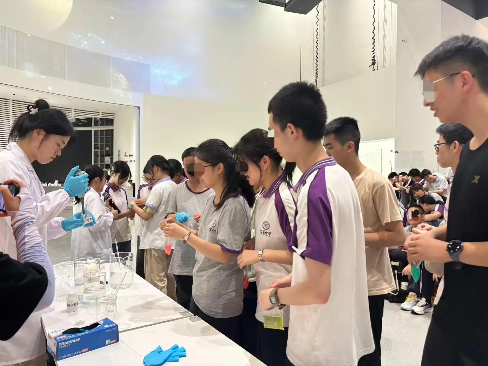
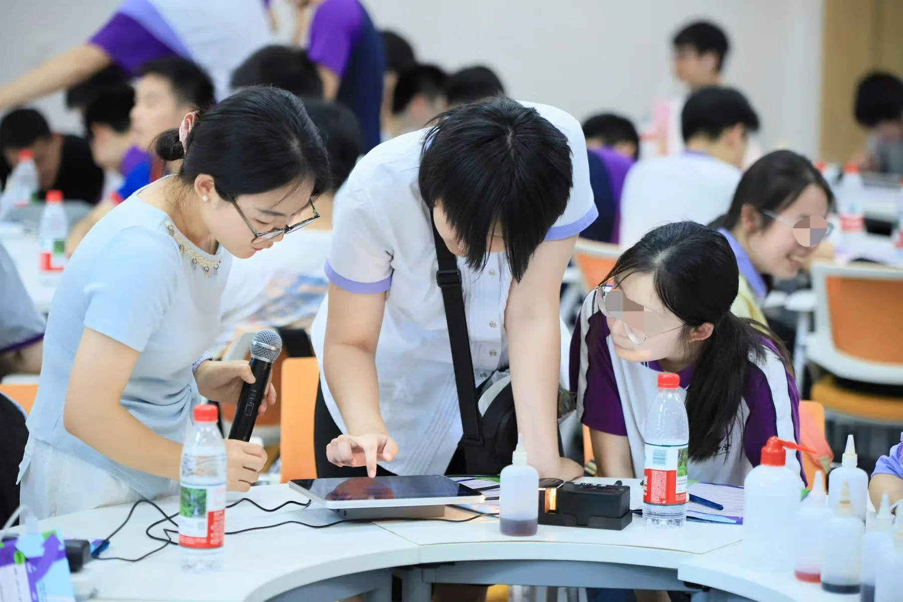
科创研学实践证书
完成科创研学后，孩子将获得北京理工大学重庆创新中心科创研学实践证书，为这次科学探索留下一份成长纪念。
DAY 02
第二天｜重庆密码：城市定向解谜挑战（09:00—17:00）
沿着母城寻找线索，和同伴一起解开重庆密码。
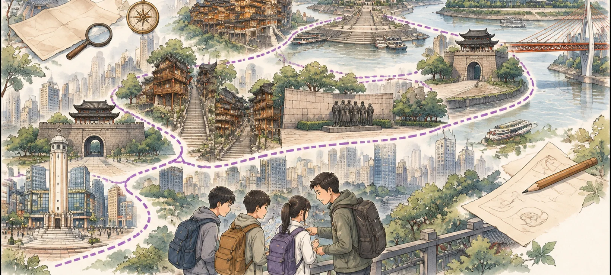
从朝天门出发，依次经过东水门、十八梯、山城步道、通远门、重庆大轰炸惨案遗址、解放碑、洪崖洞，走向重庆大剧院。一条全天线路，串起老重庆的记忆与今天的城市新貌。
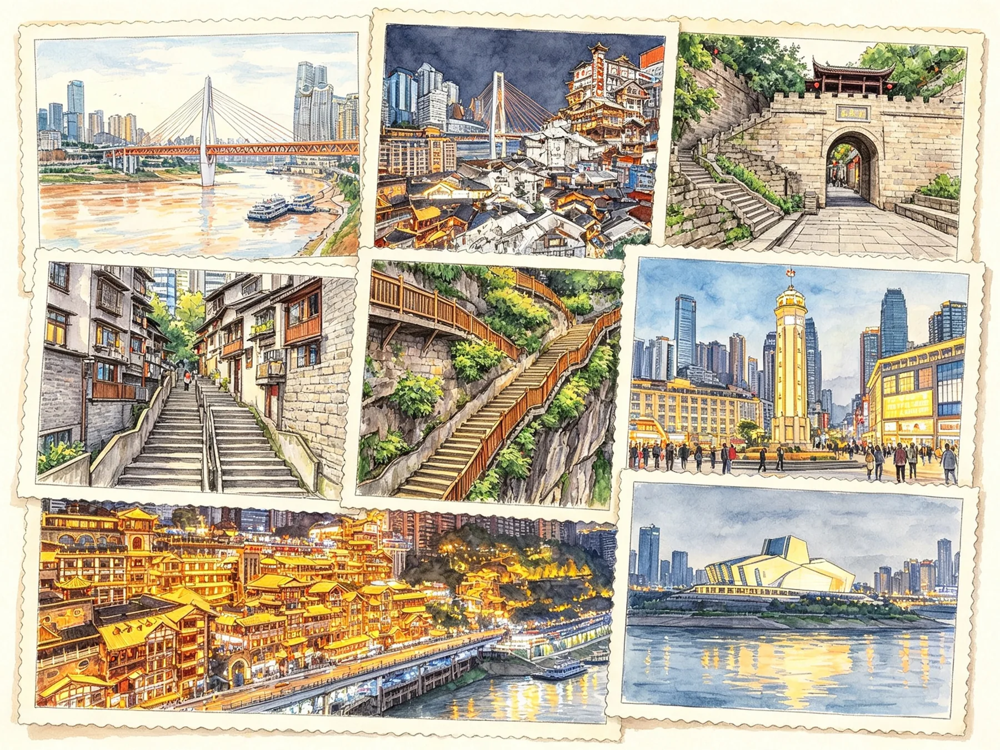
孩子组成探索小队，拿着任务地图与挑战记录寻找线索、获得密码片段。找到目标只是开始：线索判断不一致、谜题暂时解不开、行走中需要调整节奏，都可能成为小队共同面对的课题。成人提供安全支持与必要引导，把讨论、选择和尝试的空间留给孩子。
- 分工而不包办：轮换辨图、观察、核验与记录等角色，让每个人都有参与任务、贡献力量的机会。
- 讨论而不各走各的：交换现场依据，倾听不同判断，在意见不一致时共同商量办法，把分散的发现拼成有效线索。
- 遇到卡点，继续找办法：判断错了重新核对，任务卡住时寻找提示、请求支持或调整思路；行走疲惫时合理休整，不用逞强代替坚持。
- 携手完成解锁：把密码片段逐步拼在一起，记录共同完成挑战的过程，看见同伴的贡献，也看见自己面对困难时的选择。
“城市密码”是营队设置的探索游戏，让真实城市线索成为解谜内容。在重庆大轰炸惨案遗址，放慢脚步，通过历史标识认识城市经历，感受和平的珍贵，不设置娱乐化闯关。
任务在沿线公共区域展开，步行为主，跨江转场由营队统一组织。成人全程带领，沿途安排午餐、休整与交流；挑战重在共同参与、协力解决问题和在安全边界内坚持尝试，不以跑得快或硬撑到底为目标。
DAY 03
第三天｜山城秘境：寻宝发现之旅（09:00—16:00）
带着寻宝地图，在山林、轨道与旧厂房之间寻找山城的隐藏精彩。
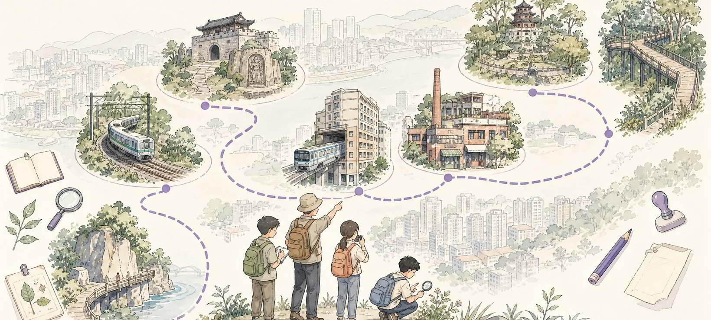
沿半山崖线的佛图关段出发，寻找列车经典视角，经佛图关走向李子坝，再登上贰厂文创公园（鹅岭二厂）、鹅岭公园，走过鹅岭步道（鹅岭栈桥段）。
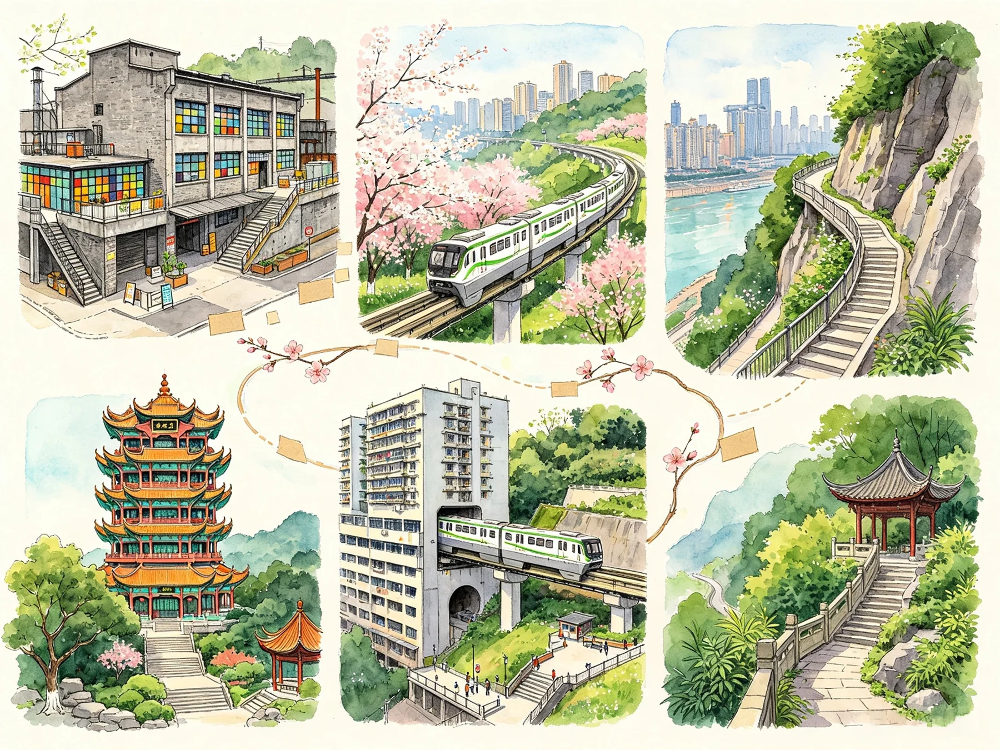
这一天不再串联密码，而是根据地图、图片或提示寻找指定目标，完成不同类型的发现与协作挑战。这里的“宝”是值得发现的城市场景、自然线索与生活细节，不是必须藏起来的实物。
- 读图寻找目标：在成人划定的安全活动范围内，把地图与现场对上，找到提示所指的目标。
- 辨认隐藏精彩：从山林与轨道相遇的场景、单轨穿楼、旧厂房的新用途、公园与步道的细节中，发现平时容易忽略的精彩。
- 小队合作挑战：轮换观察、辨图与记录等角色，共同完成基础任务，再选择适合小队的附加挑战。
- 收集发现印记：通过现场指认、记录或图卡匹配核验成果，在寻宝清单中留下发现印记，累计探索积分。
第二天的乐趣是“密码能不能解开”，第三天的乐趣是“目标在哪里、还能发现多少”。两天同属城市定向探索，却有不同的任务目标与完成结果。
探索全程成人带领，孩子不脱队自由选路，不进行公共街区竞速。积分看目标辨认、任务完成与共同参与，不以抢跑或冒险换分。
孩子带走的
- 一张兴趣探索卡：记录科学发现、感兴趣的领域、想进一步了解的未来方向，以及营后的探索行动。
- 一本双主题城市挑战任务册：第二天的有效线索与密码解锁记录，第三天的寻宝目标清单、发现印记与探索积分，两种挑战各有结果。
- 一份小队发现记录：通过简短文字、手绘或照片留下城市发现，也留下同伴共同完成任务的经历。
- 一张个人成长行动卡：写给自己——我发现了什么，我下次想怎么做。
比到过哪里更重要的，是孩子如何走过这段路
看见新事物只是学习的开始。我们更关注孩子是否愿意提出自己的问题，能否在信息不完整时寻找依据，是否愿意与不同想法的伙伴合作，以及遇到困难后怎样调整并继续行动。
- 见识有了自己的理解：不只记住一个地标或现象，也能说出自己的发现、疑问与兴趣。
- 行动有了自己的担当：承担小队中的角色，作出判断，完成自己负责的部分，而不是等待别人把任务做完。
- 合作有了具体的经历：表达想法、倾听分歧、交换依据，也学习看见和支持同伴。
- 面对困难多了一种办法：在安全边界内调整节奏、寻求帮助、改变思路，用一次次尝试积累信心与韧性。
这次营的价值，不只在孩子见过多少，更在他们主动做过什么、和谁一起克服过什么，以及由此更了解自己哪些方面。通过任务记录、晚间交流与成长行动卡，把这些变化留下来，让三天的经历成为回到日常后继续探索、合作与成长的起点。
酒店与餐饮
酒店住宿
两晚统一酒店住宿，选择环境整洁、管理规范、适合青少年团队入住的酒店。按性别分住，安排带队老师夜间值守；具体酒店与房型以出团通知为准。
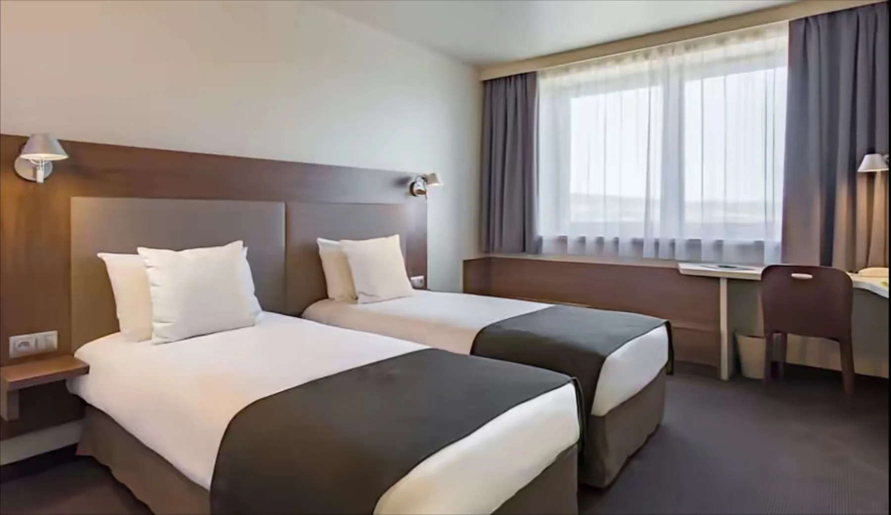
团队餐饮
营期内统一安排用餐，注重饮食卫生与荤素搭配，兼顾孩子的口味和活动所需的能量补给。城市行走期间安排补水与休整；如有食物过敏或其他特殊饮食需求，请在报名时提前告知。
每日作息
- 08:00—09:00 起床、早餐与出发准备。
- 09:00—12:00 科创或城市挑战，按当天行程开展。
- 12:00—13:00 午餐与休整。
- 13:00—18:00 科创、城市挑战与统一转场，穿插点名、休整和补水。
- 18:00—19:00 晚餐。
- 19:00—20:30 晚间成长活动：第一晚“科技大爆炸与我的未来”，第二晚“成长圆桌｜团体心理辅导”。
- 20:30—21:00 洗漱与就寝准备。
- 21:00 就寝。
第一天以集合出发安排为准：08:00永川集合，集合前请用好早餐；10:00—12:00光谱课程、13:00—15:00无人机课程、15:00—17:00疯狂科学秀，17:00后统一转场、休整与入住。
第三天12:00—13:00午餐，16:00返程，预计18:00抵达永川，返程解散后结束营队作息，不安排返程后的晚餐或住宿。
行程中保留必要的休整、补水与安全检查，按天气、人流和队员状态调整活动节奏。
以上安排为参考计划，具体以当日的行程及时间安排为准。
适合谁
9—15岁，能独立完成三天两晚的集体生活。第二天与第三天是连续两个全天的城市行走，需要有基本的行走体力和集体生活能力；如孩子有特殊身体状况，请在报名前与我们沟通。路线会按当天天气、人流与队员状态调整，不承诺绝对完成全部路段。
组织与安全
- 全程成人带队，按小队编组，孩子不单独行动；
- 城市定向以探索与协作为主，不开展街区竞速跑，不以速度计分；孩子在成人带领和划定安全范围内完成任务；
- 每段任务设固定集合点，按节奏点名、休整、补水；
- 统一住宿、统一交通，两晚按性别分住并设夜间值守；
- 不安排独自乘车、真实金钱交易与陌生采访；
- 全程为每位营员购买高额意外险，承保保险公司、保险金额及保障范围以实际保单为准，出团前向家长提供保险信息。
基础信息
项目 | 内容 |
|---|---|
营期 | 2026年11月26日—28日（三天两晚） |
出发地 | 重庆·永川，棠城公园牌坊处 |
适合年龄 | 9—15岁 |
科创场景 | 北京理工大学重庆创新中心 |
城市线路 | 朝天门—东水门—十八梯—山城步道—通远门—重庆大轰炸惨案遗址—解放碑—洪崖洞—重庆大剧院 |
山城线路 | 半山崖线佛图关段—列车经典视角—佛图关—李子坝—贰厂文创公园—鹅岭公园—鹅岭步道 |
集合 | 11月26日08:00 永川集合，具体地点在出团通知中告知 |
返程 | 11月28日16:00返程，预计18:00抵达永川 |
Camp Fees
报名费用
1698元/人
2026年11月26日—28日 · 三天两晚1498元/人
同一家庭两名孩子一起报名，也享受团报价1498元/人。费用包含
- 往返旅游大巴包车3天。
- 全程餐饮与酒店住宿（三天两晚，集合前及解散后的餐饮、住宿除外）。
- 全部课程与活动物料。
- 全程意外伤害保险。
- 结业证书。
费用不包含
- 出发地到集合点的交通费用。
- 集合前和解散后的个人支出、营期内个人消费。
- 未在“费用包含”中标明的其他费用。
- 不可抗力产生的额外费用。
对公收款账户
项目 | 账户信息 |
|---|---|
户名 | 重庆心悦星球心理健康科技有限公司 |
账号 | 500500106015003498015 |
开户行 | 交通银行股份有限公司重庆大坪支行 |
转账请备注：营员姓名＋未来探索家。